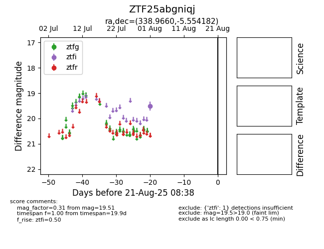

Target ZTF25abgniqj at 2025-08-21 08:38, see:
FINK: fink-portal.org/ZTF25abgniqj
Lasair: lasair-ztf.lsst.ac.uk/objects/ZTF25abgniqj
ALeRCE: alerce.online/object/ZTF25abgniqj
alt names
ZTF25abgniqj (ztf,alerce)
coordinates:
equatorial (ra, dec) = (338.9660,-5.55418)
galactic (l, b) = (60.5660,-51.20772)
photometry
last ztfi=19.51
1 ztfi detections
